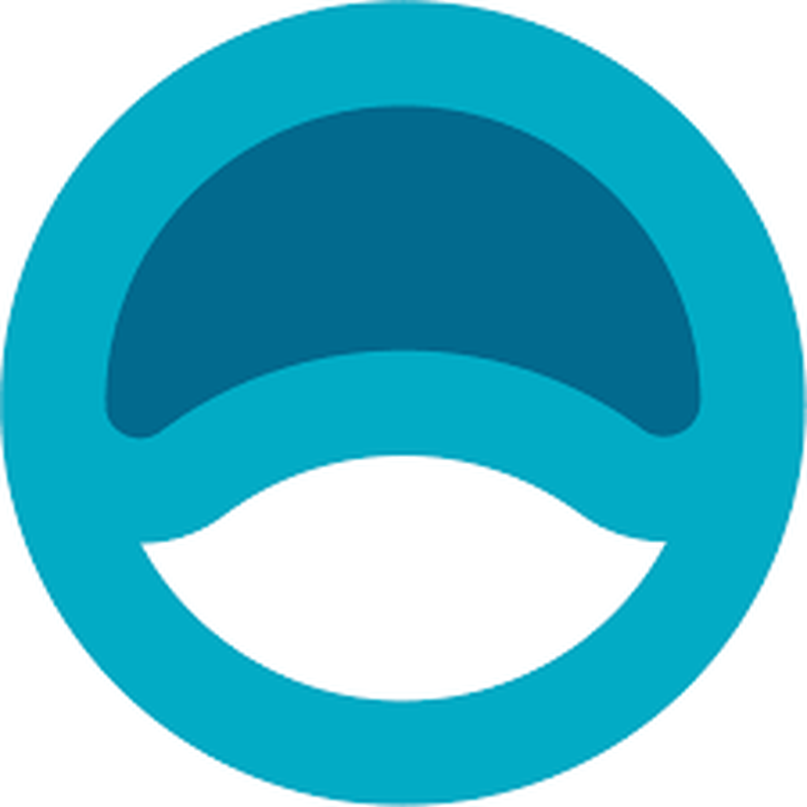
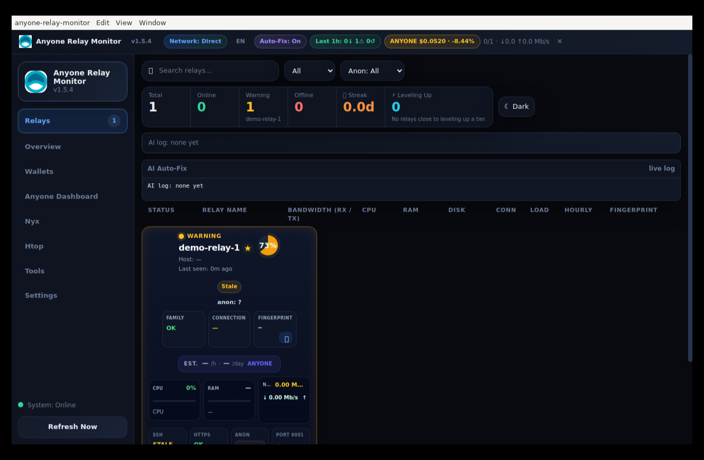

RelayPulseReal-time monitoring, AI-powered auto-fix, and reward tracking for everyone running Anyone Protocol relay or exit nodes — across your whole fleet, from one dashboard.

CPU, RAM, disk, bandwidth, connections and anon service status polled per relay — with flap dampening so a single blip doesn't page you.
When a relay goes offline or its service dies, the app can diagnose and run the fix automatically — restart services, clear stuck states, and more.
On-chain hourly/daily ANYONE earnings per relay, plus a low-earning relay detector that flags peers falling behind the fleet median.
Collect fingerprints across your fleet and apply a correct, up-to-date MyFamily line to every relay in one click.
Scan your fleet for fail2ban status and SSH exposure, then harden risky relays against SSH-flood and brute-force attacks in bulk.
See which relays are close to leveling up a reward tier — and which ones you really don't want to go offline this week.
Pick your platform — installs in under a minute.